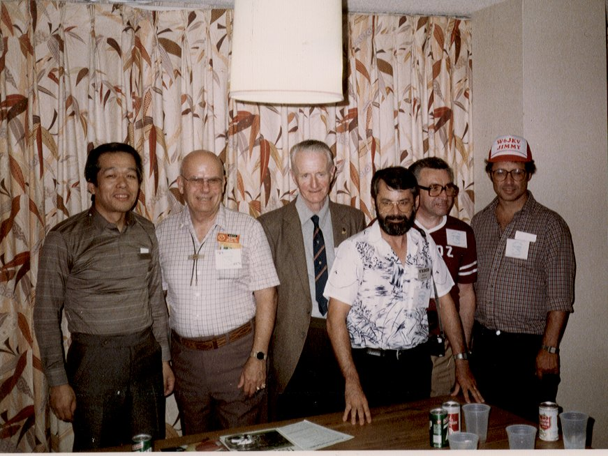
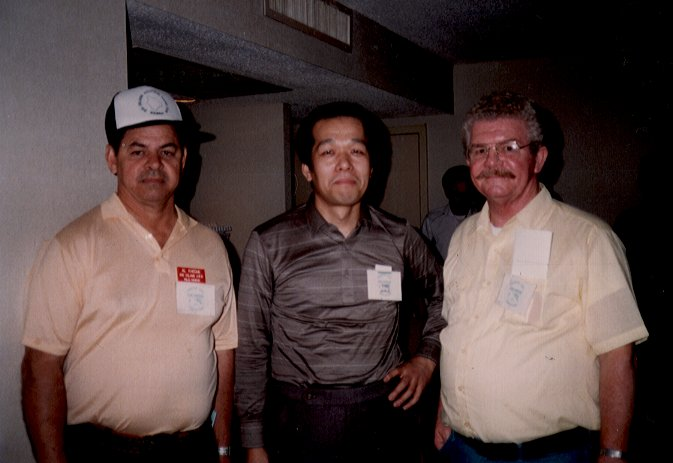
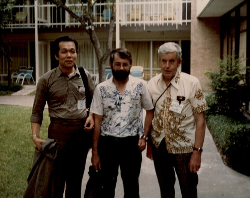
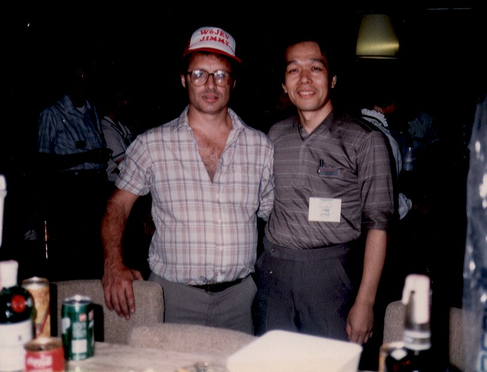
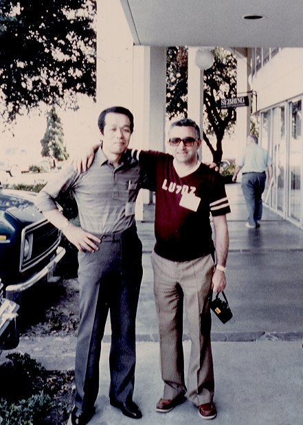

1983年の6m入感状況
[DX Report Jan-Dec.1983]
TIME:JST(UTC+0900)
Report from JA1RJU (PM95sq)
◎サイクル21の下降期の1983年。サンスポット(SSN)もいよいよ50に近づいた頃の入感リポート。
この年からVKは50MHz帯にもQRV出来るようになった。

01-8.Jan.1983
◎新年のDXオープンはなし。
09.Jan.1983
ZL2AQR 12:20 51.111 SSB QSO
11.Jan.1983
◎日本短波放送情報コーナー録音日(1/16=08:40−09:00JST放送分)
16.Jan.1983
KG6JDX 08:59 50.115 SSB QSO
VK4ZJB 13:24 52.050 SSB QSO
VK4JH 20:39 52.051 SSB QSO
30.Jan.1983
VK8GB 21:13 52.050 SSB QSO
05-06.Feb.1983
◎KSSG Meeting(長崎県大村市)出席。
13.Feb.1983
◎他に入感していた局(VK5LP.VK1VP.VK3YZP.VK4ALM.VK5AGM.VK4AHZ.VK8GF.VK2BA.VK4KAA.VK4DO)
VK2WG/P 11:21 52.057 SSB QSO
VK5ZDR 12:26 52.045 SSB QSO
VK4WIM/P 12:34 52.056 SSB QSO
VK3AZY 12:35 52.065 SSB QSO
VK3BGG/P 12:56 52.025 SSB QSO
VK3AVJ/P 13:09 52.080 SSB QSO
VK2BHO 13:57 52.068 SSB QSO
09.Feb.1983
◎13:00JST頃からVK4が入感(VK4DO.VK4ALM.VK4PU)
20.Feb.1983
VK4RO 14:01 52.065 SSB QSO
22.Feb.1983
VK4ZHO 15:21 52.039 SSB QSO
VK4PZ 15:34 52.059 SSB QSO
VK4ZSH/P 15:41 52.052 SSB QSO
VK4ZSH 15:49 52.031 SSB QSO
25.Feb.1983
◎VKが20:00頃からFBにオープン(VK4TZ.VK4JH.VK8GB.VK4RTL)。
28.Feb.1983
VK4JH 13:53 52.051 CW QSO
VK3KJK 14:03 52.055 CW QSO
04.Mar.1983
VK4ZRL 16:50 52.070 SSB QSO
06.Feb.1983
ZL2TJX 09:07 51.114 SSB QSO
FK8EM 14:50 50.100 SSB QSO
VK6OX 18:30 52.060 SSB QSO
21.Feb.1983
VK4DO 14:26 50.105 SSB QSO
H44PT 19:38 50.110 SSB QSO
24.Feb.1983
VK3AMK 13:54 52.045 SSB QSO
VK3CI 14:09 52.053 SSB QSO
VK3XQ 14:15 52.053 SSB QSO
VK3ZTK 14:19 52.020 SSB QSO
VK3ZQS 14:23 52.060 SSB QSO
01.Mar.1983
◎日本短波放送情報コーナー録音(3/6放送分)
◎16:00JST頃からVK4がオープン(VK4ZRL.VK4KCG.VK4KAG)。
06.Mar.1983
ZL1BHV 08:50 51.110 SSB
ZL2TJX 09:07 51.114 SSB QSO
ZL2AQR -- 52.050 SSB
FK8EM 14:50 50.100 SSB QSO
VK6OX 18:30 52.060 SSB QSO
◎VK6OXからの情報によるとVKでは間もなく特別免許により50.000-50.150MHz帯にもQRV
出来るかも知れないと。ただし送信電力は500PEP。
13.Mar.1983
◎午前中のZLがFB(10:30-11:30JST)。
ZL1ADP 10:54 51.-- SSB
ZL1UJT -- 51.-- SSB
ZL1BHV 11:00 51.-- SSB
ZL1AKW -- 51.-- SSB
VS6XMQ -- 51.105 SSB
◎VS5LH(Les)が来日中(3/23まで滞在＝JI1VLV)。
◎5Z4CSを運用していたJE1JKL(中村さん)が入院のため帰国中。5Z4CSの運用は終了。
20.Mar.1983
◎VS5LHが来宅(With JI1VLV.JE1JKL.JH1JLR)。
21.Mar.1983
VK4JH 13:50 52.050 SSB
VK4DO 14:26 50.105 SSB QSO
FK8EM 15:30 50.100 CW/SSB QSO
H44PT 19:38 50.110 SSB 1SO
24.Mar.1983
VK3AMK 13:54 52.045 SSB
VK3CI 14:09 52.053 SSB
VK3XQ 14:15 52.035 SSB
VK3ZTK 14:19 52.020 SSB
VK3ZQS 14:23 52.060 SSB
29.Mar.1983
◎JARL 1200MHz Beacon JR1WBが開局。
13.Apr.1983
◎日本短波放送・ハム合格大作戦「DX情報コーナー」(担当：小笠原=JA1RJU)録音日
(司会：羽根田新=JG1KYL、服部洋之=exJJ1WFF、富永アナウンサー)。
15.Apr.1983
VK4KAG 13:02 52.050 SSB QSO
VK2ZMT 13:05 52.050 SSB QSO
VK4ZSH/4 13:07 52.050 SSB QSO
VK4RO 13:42 52.050 SSB QSO
VK6OX 14:03 52.050 SSB QSO
FK8AX 14:52 50.107 SSB QSO
KG6DX 15:25 50.110 SSB/CW QSO
FK8EM 15:35 50.110 CW QSO
16.Apr.1983
◎午後(12:15−)からVKが入感。
VK2DDG 12:15 52.050 SSB
FK8AX 12:30 50.100 SSB
VK4RTL 12:54 50.- CW
VK4RO 15:20 52.050 SSB
H44PT 15:20 52.050 SSB
17.Apr.1983
VK8GB 17:20 52.050 SSB QSO
23.Apr.1983
VK4ZYZ 18:22 52.040 SSB QSO
VK4ZSH/4 19:11 52.070 SSB QTH=Urandangi
VK4ZSH/4 19:35 144.103 SSB QSO
21.Apr.1983
◎1S(南紗群島=Spratly Is=アンボイナケイ島)に向かっていたドイツのDX-Peditionグループが遭難。
大型ヨット「シッタルダ」が南シナ海(N7度52,E109度05)でベトナム軍から銃撃を受け沈没。
2人が死亡、残る4人は漂流中に日本の船舶に救助された。(4/10遭難、4/19救助）。
○生存＝(船長・ペーター・マックス=37=、トスウェーネオ=35=、ドロブニカ・バロール=48=
ノルベルト・ウィロード=35=）
●死亡＝(ディートヘルム・ミューラー、ゲロ・バント) (朝日新聞・4/21朝刊)
24.Apr.1983
◎VK4ZSH/4が2m(144.100MHz)で運用(QTH:Urandangi)。今季2度目の2mオープン。
19:20JST JA1RJU
19:22JST JK1DUP
19:24JST JA7OXL(新記録=VK4ZSH試算:6,610Km、前回は6,511Km)
19:26JST JA1VOK
◎2mでVK4BFOが入感。VK4BFOはVK4ZSH/4と同じ周波数だったので最初混乱した。SSBも入感したが
144.103のJA1VOKのBeaconと混信していてQSOは出来なかった。
この日(4/24)のオープンでVK4BFOはJK1DUP.JG1BGK.とQSO。
VK4ZSH/4 19:15 52.050 SSB QSO
VK4ZSH/4 19:20 144.100 SSB QSO QTH=Urandangi
VK4TL 19:43 52.050 SSB QSO
P29QA 19:48 52.065 SSB QSO
VK6OX 14:03 52.050 SSB QSO
25.Apr.1983
VK6GU 21:37 52.050 SSB
26.Apr.1983
VK4ZSH/4 19:25 52.- SSB
VK4IR 19:40 52.- SSB
27.Apr.1983
ZL3TIC 17:10 51.- SSB
ZL3THM 17:14 51.- SSB
ZL1UMB 17:15 51.- SSB
29.Apr.1983
◎2mでVK4が再びFBに入感。VK4BFOとのQSOに成功。
VK4BFO 20:02 144.100 CW QSO FT-290(100W+5ele)
VK4ZSH/4 20:16 52.050 SSB QSO
VK5ZDR 22:51 52.067 SSB QSO
30.Apr.1983
VK4ZSH/4 19:20 52.050 SSB QSO
VK4ZSH/4 19:37 144.100 SSB
VK4ZSH/4 20:19 52.050 SSB QSO
01.May.1983
VK3AMK 13:01 52.043 SSB QSO
VK3DQJ 13:08 52.054 SSB QSO
VK3NM 13:10 52.048 SSB QSO
VK3BW 13:20 52.060 SSB QSO
VK3XDP 13:28 52.050 SSB QSO
VK2ZYI 13:41 52.045 SSB QSO
VK1VP 13:44 52.075 SSB QSO
VK2YVG 14:06 52.023 SSB QSO
VK2EEC 14:08 52.033 SSB QSO
VK2YKG 14:18 52.070 SSB QSO
VK4WQ 16:17 52.060 SSB QSO
VK4ZV 16:33 52.050 SSB QSO
VK4KSY 16:39 52.058 SSB QSO
VK4ZSH/4 16:52 52.040 SSB QSO
VK4ZYZ 17:15 52.080 SSB QSO
VK4KUY 17:43 52.045 SSB QSO
VK6ZDY 18:54 52.050 SSB QSO
VK4IR 19:04 52.050 SSB QSO
VK4ZSH/4 20:36 52.050 SSB QSO
◎19:25JST頃から144.100MHzでVK4BFOが入感。JA1VOK.JE1GCN.JK1DUP等がCWでQSO。
VK4ZSH/4によると、144.770のポケベル？が入感していると。
04.May.1983
◎19:51JST頃からVK4ZSH/4が144.100MHzでFBに入感。(QTH=Cloncurry)
今日の2mでのQSO局。
19:51JST JA1RJU
19:53JST JN1JFC
19:56JST JM1SOZ
19:57JST JL1CWS
19:58JST JO1CFO
20:01JST JA0IXX
20:03JST JA1VC
20:05JST JO1BZR
20:06JST JA1ALT
20:11JST JM1ION
20:16JST JA1RJU
20:23JST CQ JA
20:24JST CQ JA
20:30JST F.OUT
-------------------------------------------------
VK4ZSH/4 18:36 52.050 SSB QSO QTH=Cloncurry
VK4ZSH/4 19:51 144.100 SSB QSO
VK4ZSH/4 20:17 52/144 SSB QSO
09.May.1983
JD1BBG 12:42 50.110 SSB QSO
18.May.1983
WL7ACY 12:00 50.110 SSB
22.May.1983
WA4TNV/KL7 08:56 50.123 SSB QSO
WA6BYA 12:20 50.110 SSB into JA7NAM
◎ZL4OY/CはZL本土と50.110のCWでQSOしている(ZL1MQ.ZL1BHV.ZL2AQR.ZL2KT)。
01.Jun.1983
DU1GF 08:48 50.101 CW
02.Jun.1983
KB7IJ/KH2 18:00 50.105 CW
VS6EL 18:30 50.110 SSB QSO
05.Jun.1983
KG6JDX 16:40 50.110 SSB QSO
HL1JD 18:20 50.110 SSB
10.Jun.1983
VS6XLA 23:21 50.110 SSB QSO
12.Jun.1983
WL7ACY 06:30 50.110 SSB
WA4TNV/KL7 08:30 50.190 SSB
KG6DX 13:03 50.110 SSB QSO
KG6JDX 13:09 50.110 SSB QSO
13.Jun.1983
WA4TNV/KL7 06:41 50.110 SSB QSO
WL7ACY 06:42 50.110 SSB QSO
17.Jun.1983
◎OSCAR 10号Beacon初受信。
"AT 100S00 00UTC ORBIT 2 MA2/256 ALM OS UBAT 15,0VTBAT,3,9CIARR,0,1,SA0 1 SATELLITE
STATUSO FIRST MOOR FIRING AND ORBIT,CHANGEED"
18-20.Jun.1983
◎1983 SMIRK Contest
18.Jun.1983
VS6XMT 09:03 50.110 SSB QSO
VS6XLA 09:31 50.110 SSB QSO
19.Jun.1983
HL2JD 09:00 50.110 SSB QSO
20.Jun.1983
WA4TNV/KL7 07:00 50.110 SSB QSO
WA4TNV/KL7 07:10 50.110 SSB QSO
26.Jun.1983
N6CT 16:30 50.103 CW Es into JA2-4
03.Jul.1983
VS6XLA 17:30 50.110 SSB
VS6XMT 17:44 50.100 SSB QSO
04-30.Jul.1982
◎特記するDXの入感はなし。
02.Aug.1983
VK8GB 21:25 50.110 SSB
03-21.Aug.1983
◎特記するDXの入感はなし。
◎VK8GBの情報によると7/22から50MHz帯にQRVが可能になったと。運用周波数は50.000-50.150MHz。
ZL1ADPからの情報では7/26からVK6.8.9.0は全時間。VK2.3.4.5ではTVがOFFの時間。VK1.7は不明。
16.Aug.1983
◎K6MYC夫妻が来日。
17-19.Aug.1983
◎ハムフェスティバル(晴海)。K6MYC Meeting(JA1AUH.JA1JHF.JA5FDR.JA8DXB.JR1SWB.JI1VLV.JH3XWB
JE1JKL.JA1RJU)。
20.Aug.1983
◎XU1SS DX Peditionで打ち合わせ。
現在免許されている局はXU1SS、XU1KC、XU1PV、XU1IPの4局。
6mはIC-551(10W)＋KLMリニアーアンプ。アンテナは4eleのHB9CV。
運用可能な時間帯：08:00-17:00LMT(10:00-19:00JST)。
8/23からJA3UB.JA1PCYが出発。日本人による運用は8/30が最終日となる。
8/20現在JH1KRC.JF1QKF.JL1UXH.JH4RUGが滞在している。
◎XU1SSが初入感。初QSOは18:53JSTにSSBでQSOしたJA4MBM。
21.Aug.1983
◎XU1SSが2度目のオープン。
22.Aug.1983
◎XU1SSのオープンは17:00JST頃から。1エリアでのQSOは少なく8/22現在QSOが確認されている
局は10局程度。
XU1SS 18:24 50.110 SSB QSO (6m #066)
◎17:56JST頃からXU1SSがオープン。本日のOPはJA1PCY。19:00JST頃まで聞えていた。
8/23までのJH4RUG、8/23以降のJA1PCYによるQSOを含めQSOは390局。
第1次メンバー(8/10-8/16)＝JA1UT.JH1KRC.JK1KHT.JE1OMO
第2次メンバー(8/17-8/24)＝JH4RUG.JF1GKF.JL1UXH
第3次メンバー(8/23-8/31)＝JA3UB.JA1PCY
◎XU1SSのエリア別QSO数:
JA1=20.JA2=92.JA3=96.JA4=35.JA5=24.JA6=106.JA7=1.JA8=14.JA9=1.JA0=1。
26.Aug.1983
VK6RO/M 17:48 50.110 CW QSO
27-28.Aug.1983
◎VSG全国大会Meeting(仙台市・茂庭)
02.Sep.1983
VK8GB 20:45 50.110 SSB QSO
VK6RO/M 22:07 50.110 SSB QSO
03-30.Sep.1983
◎特記するDXの入感はなし。
01-23.Oct.1983
◎特記するDXの入感はなし。
07-13.Oct.1983
◎1983 ARRL NATIONAL CONVENTION & SMIRK10周年記念大会出席のため米国・ヒューストンへ。
◎現地でEyeballした主な局＝N5TX.K5ZMS.WA5IYX.KG6JDX.XE1GE.W6JKV.AL7C.AL7FH.KL7NO
KH6IAA.LU7DZ.K5CM.W5FF.N5KW.W3XO.EI9D.WB6BMB.WA6IJZ.ZL1MQ.VK4ZHO.W1HDQ.K6HCP
W3IUW.VK8GB.WA4TNV/KL7(現・W4TNV).W3ILG.WA8OGS.K8EFS.8P6CM.N4VC.K5MUH.XE1TIS
WB5KBK.N6MA.K6ELQ.WD6BCN

SMIRKのメンバーのコールサインが6大陸からの集まった。写真左から
JA1RJU(AS)、N5TX(NA)、EI9D(EU)、VK8GB(OC)、LU7DZ(SA)、C5AEH(W6JKV)(AF)


左からKH6IAA、JA1RJU、WA4TNV/KL7/(右)JA1RJU、VK8GB、ZL1MQ


W6JKV(Jimmy)とJA1RJU(Kazu) /(右)JA1RJUとLU7DZ(Ed)
20.Oct.1983
◎CQ出版社創立30周年記念式典出席。
23.Oct.1983
DU1GF 16:33 50.138 SSB
VS6XMT 17:05 50.100 SSB
DU1RGM 17:15 50.202 SSB
KA6RA 18:00 50.110 SSB
24.Oct.1983
KG6DX 10:06 50.105 SSB QSO
VK6ZPG 14:08 50.100 SSB QSO
VK6PR 14:25 50.097 SSB QSO
VK6RTV 14:30- 50.- Beacon
VK6KAT/6 15:11 50.120 SSB QSO
VK6OX 15:21 50.140 SSB QSO
◎W6JKV/CE0・Easter Is DX Pedition開始。K6MYC/CE0と共にEMEの運用も行う。
01.Nov.1983
VK4RTL 20:00- 50.- CW
VK4PZ 20:00- 50.109 SSB
P29ZUK 21:20 50.115 SSB
VK4HT 21:22 52.050 SSB
VK8VF 21:23 52.200 CW Beacon
02.Nov.1983
◎W6JKV/CE0.K6MYC/CE0の6mのQSOは16局(KH6.PY.LU.CE)。EMEは18局(EU.USA)。
09.Nov.1983
KH6IAA 06:50 50.- SSB
KG6DX 07:38 50.099 SSB
VK9NS 11:07 50.110 SSB QSO
VK3XQ 11:17 52.055 SSB QSO
VK5ZBU 11:53 52.050 SSB QSO
VK6ZDY 21:00 50.130 SSB QSO
VK6ZPG 20:58 50.120 SSB
13.Nov.1983
ZK2RS 12:38 50.110 SSB QSO (OP.ZL4DO)
24.Nov.1983
VK4YLG 14:34 50.120 SSB QSO
VK4DO 14:48 50.110 SSB QSO
26.Nov.1983
◎OSCAR-10にQRVを開始(ORBIT-340)
SV1OE 17:09 145/435 SSB QSO (1st AO-10 QSO )
DL1CF 17:48 145/435 SSB QSO
04.Dec.1983
ZL4OY/C 14:58 50.110 SSB QSO (6m #067)
◎ZL4OY/C(Chatham Is)が入感、12:10JSTにJR1MLTが50.110MHzで初QSO(1st Ever)。
12:00JSTに28.885MHzでJA2DDNとQSO後、6mにQSYしCallしていたのをJR1MLTが受信、QSOしたもの。
一旦フェードアウトした後、14:48JST頃から再び入感してきた。
16.Dec.1983
◎14:44JST頃からZL4OY/Cが2度目の入感。1.2エリアを中心に15:45JST頃まで入感。
◎15:00-16:00JSTにZL(ZL2TID.ZL2KT.ZL2AQR.ZL2ADT.ZL2TSE)がFBに入感。
17-31.Dec.1983
◎特記するDXの入感はなし。
23.Dec.1983
◎日本短波放送・1984年1月6日、13日分新年特別号録音。
パーソナリティー：子門真人(JI1KLK)、大橋照子(JL1GPK)。
「DX情報コーナー」(担当：小笠原=JA1RJU)。
|